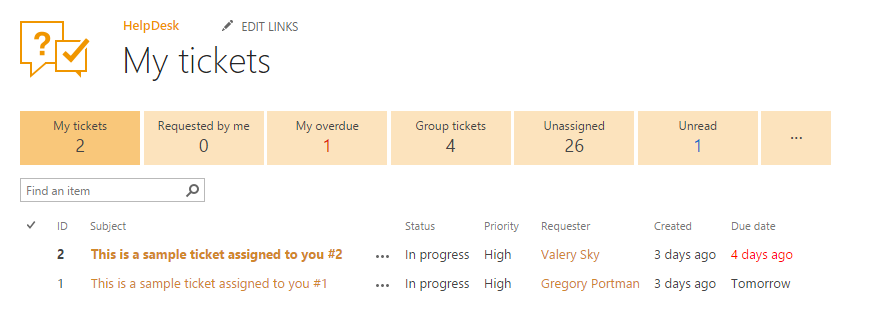
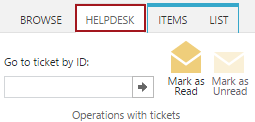
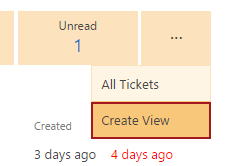
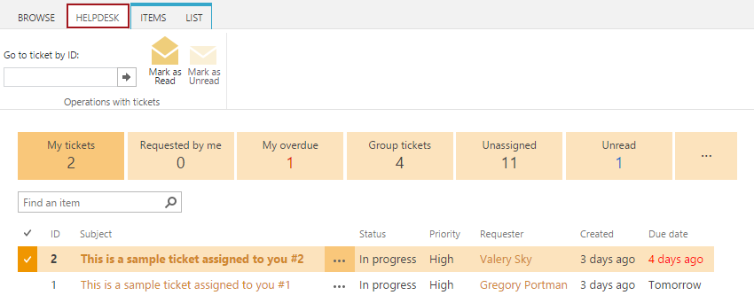

Home¶
This is the home page where agents process their tickets. This section contains tickets that are related to the current agent only. Navigate to home page using the icon on the navigation bar at the right hand side:
Home views¶
You can navigate to several built-in views using links at the top of the page. There is a counter of tickets below each link.
All new and updated tickets are auto marked as unread. An example of such ticket is shown below:

Note
Unread tickets are displayed as unread for the assignee only.
Bold typing is used in “My tickets” and “My overdue” views only.
Here is the list of built-in views:
- My tiсkets
- All tickets assigned to you. (Tickets that have you specified in the “Assigned to” field).
- Requested by me
- All tickets requested by you. (Tickets that have you specified in the “Requester” field).
- My overdue
- Tickets assigned to me with Due date before today.
- Group tickets
- Tickets assigned to SharePoint groups that I belong to. (You can assign tickets to SharePoint groups, e.g.”IT Support”).
- Unassigned
- All tickets with an empty “Assigned to” field.
- Unread
- All unread tickets assigned to you.
Resolved tickets are not displayed in any of the home views.
There is also HelpDesk ribbon tab. Use it to navigate to ticket by id. Just type id the id and hit Enter:

How to add a new view¶
You have several standard SharePoint ways to create your own custom view. To simplify your work we added such option to home navigation. Just click ”...” button in home navigation and select “Create view”. All views you created are displayed under ”...” menu.

Mark tickets as read or unread¶
When a ticket is created or updated it is marked as unread for the assignee. All unread tickets are displayed with bold typed titles andW ids in “My tickets” and “My overdue” views. There is also a separate Unread view, where the agent can see all unread tickets.
You can mark tickets as read or as unread manually. Select single or multiple tickets in the view, switch to “HelpDesk” tab in the ribbon and click “Mark as Read” or “Mark as Unread” button:
